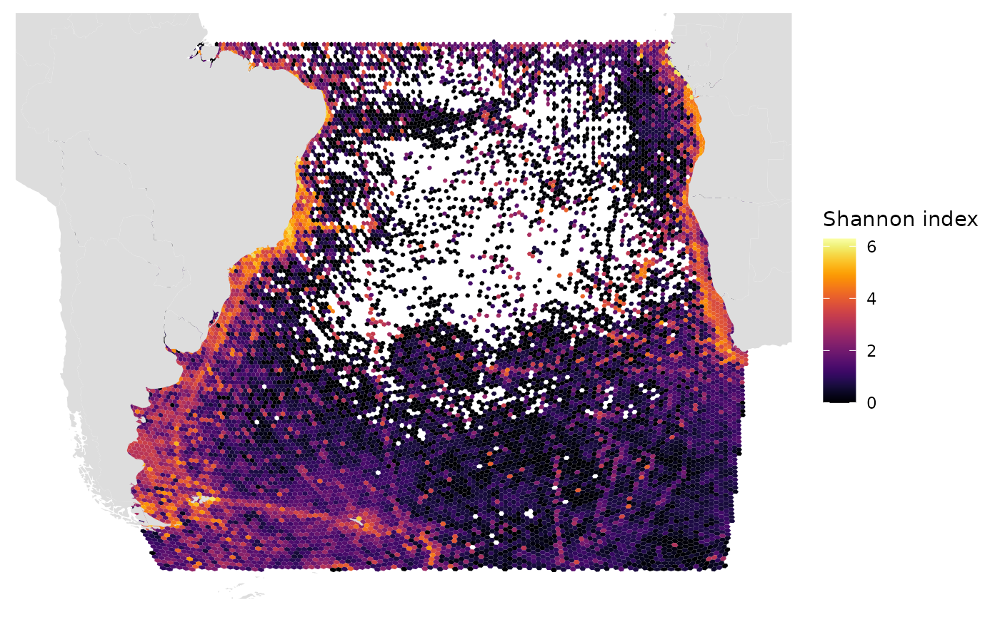
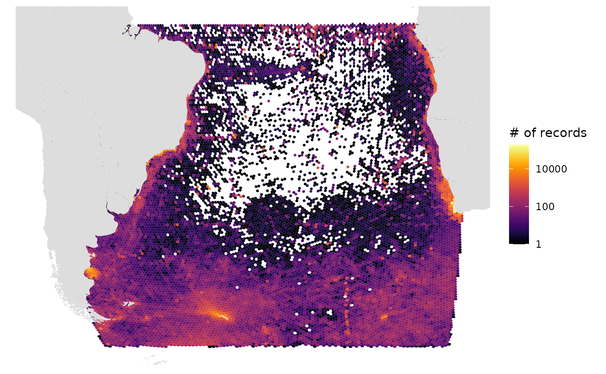

library(obisindicators)
library(dggridR) # remotes::install_github("r-barnes/dggridR")
library(dplyr)
library(sf)Get regional biological occurrences
Let’s use the regional subset for the South Atlantic from the full OBIS dataset otherwise available at https://obis.org/data/access.
occ <- occ_SAtlantic # occ_1M OR occ_SAtlanticCreate a discrete global grid
Create an ISEA discrete global grid of resolution 9 using the dggridR package:
dggs <- dgconstruct(projection = "ISEA", topology = "HEXAGON", res = 9)Then assign cell numbers to the occurrence data:
occ$cell <- dgGEO_to_SEQNUM(dggs, occ$decimalLongitude, occ$decimalLatitude)[["seqnum"]]Calculate indicators
The following function calculates the number of records, species richness, Simpson index, Shannon index, Hurlbert index (n = 50), and Hill numbers for each cell.
Perform the calculation on species level data:
idx <- calc_indicators(occ)Add cell geometries to the indicators table (idx):
# rda <- here::here("data-raw/region_diversity_stop-dgcellstogrid.RData")
# save.image(rda)
# load(rda)
grid <- dgcellstogrid(dggs, idx$cell) %>%
st_wrap_dateline() %>%
rename(cell = seqnum) %>%
left_join(
idx,
by = "cell")Plot maps of indicators
Let’s look at the resulting indicators in map form.
# ES(50)
gmap_indicator(grid, "es", label = "ES(50)")
# Shannon index
gmap_indicator(grid, "shannon", label = "Shannon index")
# Number of records, log10 scale, Robinson projection (default)
gmap_indicator(grid, "n", label = "# of records", trans = "log10")
# Number of records, log10 scale, Geographic projection
gmap_indicator(grid, "n", label = "# of records", trans = "log10", crs=4326)